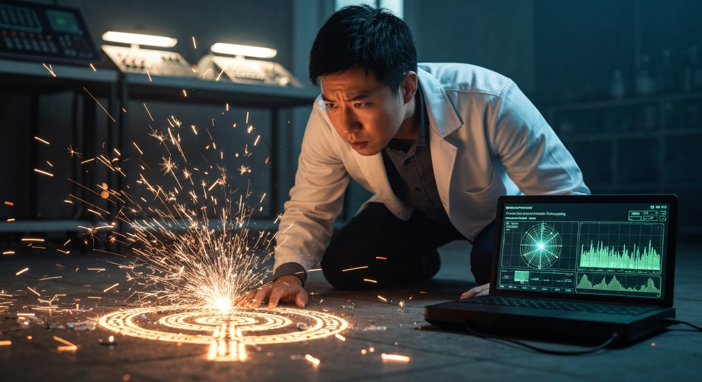
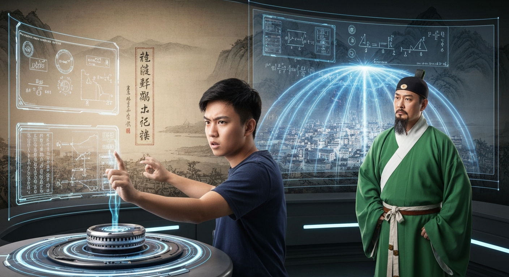
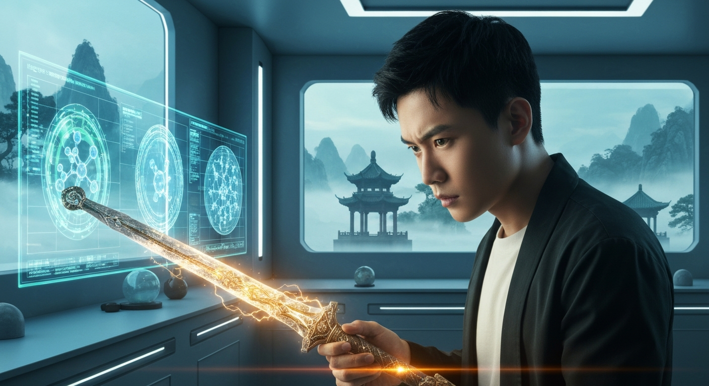
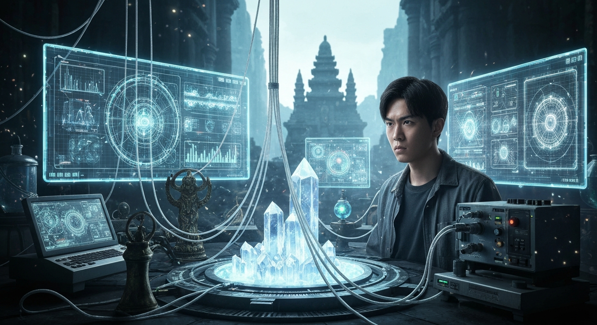
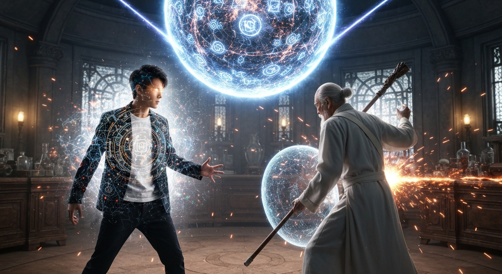
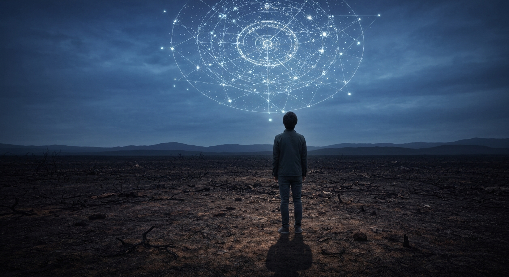
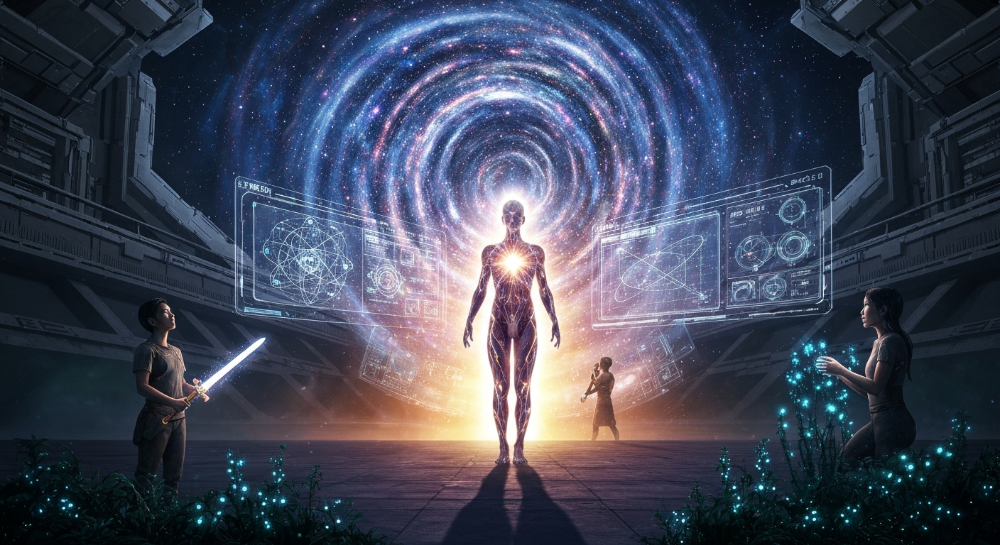

量子糾纏下的靈氣初現

第 1 篇
量子糾纏下的靈氣初現
漆黑的實驗室內，只有李明眼前全息投影屏發出的幽藍光芒，映照著他疲憊卻又堅毅的面容。身為全球頂尖的量子材料科學家，他正嘗試利用超低溫超導體構建一個微觀粒子糾纏網絡，以期突破現有計算機的瓶頸。然而，就在他將液氦注入冷卻迴路，準備啟動脈衝雷射的瞬間，儀器發出了一聲尖銳的警報。接著，整個實驗室的電力系統瞬間過載，巨大的電弧在天花板上跳躍，將黑暗撕裂成碎片。李明被震退數步，眼前一黑，等他恢復意識時，實驗室中央的超導磁場發生器已經被一種不可名狀的能量撕裂，碎片散落一地。更令人驚訝的是，空氣中彌漫著一種他從未檢測過的微弱能量波動，其頻率與波長皆超越了現有物理學的認知範疇。他迅速啟動了備用能量探測器，屏幕上顯示的數據讓他瞳孔驟縮——那是一種極其微觀、卻又具備高度組織性的能量場，其粒子行為模式與量子糾纏有異曲同工之妙，卻又更加複雜精妙。
就在此時，李明腳下傳來一陣微弱的共振。他低頭一看，發現地板上原本被震碎的超導材料碎片，此刻竟自行排列成一個古老的符文圖案，散發著微弱的熒光。他小心翼翼地觸碰那符文，一股冰涼的氣息瞬間湧入他的指尖，直達識海。剎那間，無數晦澀難懂的古文字與符號憑空浮現，在他腦海中交織成一部殘缺的功法。這些文字筆畫複雜，充滿了玄奧的意境，描述著一種名為「引氣入體」的修煉法門，以及如何感應、吸納天地間「靈氣」的過程。功法開篇便提到：「靈者，宇宙本源之能，衍化萬物。凡夫俗子，難以窺其門徑，唯心性堅毅者，方能觸及一二。」
李明憑藉超凡的記憶力，將功法內容盡數銘記於心。雖然他對其中的「靈氣」、「經脈」等概念一無所知，但他敏銳的科學直覺告訴他，這絕非迷信。他將這些古老符號與他剛才檢測到的能量波動聯繫起來，決定以科學家的嚴謹態度，從實驗室的廢墟中重新開始。他從儲物櫃中取出了高精度頻譜分析儀和超導量子干涉儀，開始對那符文圖案進行逆向工程分析，試圖從能量層面解讀其構造。他相信，修仙絕非虛妄，而是一種尚未被現代科學完全揭示的宇宙法則，一種更深層次的能量運用方式。他要用科學的鑰匙，打開修仙世界的大門。
就在此時，李明腳下傳來一陣微弱的共振。他低頭一看，發現地板上原本被震碎的超導材料碎片，此刻竟自行排列成一個古老的符文圖案，散發著微弱的熒光。他小心翼翼地觸碰那符文，一股冰涼的氣息瞬間湧入他的指尖，直達識海。剎那間，無數晦澀難懂的古文字與符號憑空浮現，在他腦海中交織成一部殘缺的功法。這些文字筆畫複雜，充滿了玄奧的意境，描述著一種名為「引氣入體」的修煉法門，以及如何感應、吸納天地間「靈氣」的過程。功法開篇便提到：「靈者，宇宙本源之能，衍化萬物。凡夫俗子，難以窺其門徑，唯心性堅毅者，方能觸及一二。」
李明憑藉超凡的記憶力，將功法內容盡數銘記於心。雖然他對其中的「靈氣」、「經脈」等概念一無所知，但他敏銳的科學直覺告訴他，這絕非迷信。他將這些古老符號與他剛才檢測到的能量波動聯繫起來，決定以科學家的嚴謹態度，從實驗室的廢墟中重新開始。他從儲物櫃中取出了高精度頻譜分析儀和超導量子干涉儀，開始對那符文圖案進行逆向工程分析，試圖從能量層面解讀其構造。他相信，修仙絕非虛妄，而是一種尚未被現代科學完全揭示的宇宙法則，一種更深層次的能量運用方式。他要用科學的鑰匙，打開修仙世界的大門。
💬 當量子糾纏遇上古老符文，是科學的終點，還是修仙的起點？

第 2 篇
築基之變：科修初試鋒芒
李明從全息投影屏前抬起頭，揉了揉發脹的眉心。那套從古籍中拓印的《玄元煉氣訣》，晦澀難懂的古文字在常人眼中無異於天書，但在李明眼中，卻是一連串等待被解析的能量傳導路徑與物質轉化公式。他用量子力學的微觀視角，嘗試將功法中「引氣入體」的描述，解構為靈氣粒子在經脈中形成量子隧穿效應，並利用流體力學的原理，計算經脈的最佳「流線型」以減少阻力，提升靈氣運行效率。
然而，理論模型的建立遠比實踐困難。第一次嘗試，他過於專注於粒子間的量子糾纏效應，忽略了靈氣本身的宏觀流動性，導致靈氣在丹田處形成紊亂的漩渦，劇痛如潮，他當場吐出一口血，修為不進反退，險些走火入魔。這次失敗讓李明明白，科學雖能提供新的視角，卻不能完全取代修仙的經驗積累。他開始調整思路，將傳統修仙的「意守丹田」、「內觀經脈」等心法，作為宏觀調控的「控制變數」，再結合微觀物理學的精準計算。
數月後，在一次次的失敗與修正中，李明終於找到了平衡點。他以現代材料科學的思維，分析靈氣與肉身的交互作用，將築基丹的煉製原理視為一種催化反應，通過精準控制藥材的分子結構與靈氣的量子態，達到了前所未有的轉化效率。當丹田深處傳來一聲輕微的轟鳴，全身經脈如同被活化了一般，一股清涼而強大的力量充盈四肢百骸，李明知道，他成功了。築基！不再是虛無縹緲的傳說，而是他用科學一步步驗證出來的現實。
築基後的李明，對靈氣的感知更加敏銳。某日，城市邊緣的靈氣監測站發出紅色警報，一股不明的靈氣波動正在迅速擴散，威脅著普通民眾的生命安全。李明趕到現場，只見靈氣如同失控的電磁波，扭曲了周遭的光線，甚至引發了小型磁暴。傳統修仙者束手無策，只能設法疏散人群。李明果斷取出他自行設計的『靈氣場穩定裝置』，這是一個由複雜電磁線圈和共振晶體構成的儀器。他將裝置架設在靈氣波動的核心區域，根據實時數據調整頻率，試圖利用電磁場與靈氣波動產生共振，以達到反向抵消的效果。在眾人半信半疑的目光中，裝置發出嗡鳴，一道道肉眼可見的電磁波紋向外擴散，與混亂的靈氣場相互作用。起初並無效果，裝置甚至瀕臨崩潰，但李明腦海中飛速閃過各種計算模型，他咬牙再次調整參數，終於，靈氣波動漸漸平息，城市恢復了平靜。
此次事件引起了不小的震動。不僅僅是普通民眾的讚歎，更引來了一個名為「靈源科修會」的小型門派的注意。他們派出了代表，一位名為葉青的築基後期修士前來拜訪。葉青身著青色道袍，氣質飄逸，卻眉頭微蹙，他審視著李明的『靈氣場穩定裝置』，眼中充滿了不解與好奇：「李道友，你這裝置，究竟是何原理？我見你並未引動天地靈氣，卻能平息異變，這與我等修仙之法大相徑庭。」李明淡然一笑：「葉道友，此乃以物理之理，駕馭天地之機。靈氣本質，不過是一種高維能量形態，既然是能量，便可被解析、測量、乃至調控。」兩人對坐論道，李明嘗試用量子場論、電磁學解釋修仙的本質，而葉青則用傳統的「天人合一」、「道法自然」來回應。兩種截然不同的思維模式激烈碰撞，卻也激發出異樣的火花，預示著更深層次的交流與衝突。
然而，理論模型的建立遠比實踐困難。第一次嘗試，他過於專注於粒子間的量子糾纏效應，忽略了靈氣本身的宏觀流動性，導致靈氣在丹田處形成紊亂的漩渦，劇痛如潮，他當場吐出一口血，修為不進反退，險些走火入魔。這次失敗讓李明明白，科學雖能提供新的視角，卻不能完全取代修仙的經驗積累。他開始調整思路，將傳統修仙的「意守丹田」、「內觀經脈」等心法，作為宏觀調控的「控制變數」，再結合微觀物理學的精準計算。
數月後，在一次次的失敗與修正中，李明終於找到了平衡點。他以現代材料科學的思維，分析靈氣與肉身的交互作用，將築基丹的煉製原理視為一種催化反應，通過精準控制藥材的分子結構與靈氣的量子態，達到了前所未有的轉化效率。當丹田深處傳來一聲輕微的轟鳴，全身經脈如同被活化了一般，一股清涼而強大的力量充盈四肢百骸，李明知道，他成功了。築基！不再是虛無縹緲的傳說，而是他用科學一步步驗證出來的現實。
築基後的李明，對靈氣的感知更加敏銳。某日，城市邊緣的靈氣監測站發出紅色警報，一股不明的靈氣波動正在迅速擴散，威脅著普通民眾的生命安全。李明趕到現場，只見靈氣如同失控的電磁波，扭曲了周遭的光線，甚至引發了小型磁暴。傳統修仙者束手無策，只能設法疏散人群。李明果斷取出他自行設計的『靈氣場穩定裝置』，這是一個由複雜電磁線圈和共振晶體構成的儀器。他將裝置架設在靈氣波動的核心區域，根據實時數據調整頻率，試圖利用電磁場與靈氣波動產生共振，以達到反向抵消的效果。在眾人半信半疑的目光中，裝置發出嗡鳴，一道道肉眼可見的電磁波紋向外擴散，與混亂的靈氣場相互作用。起初並無效果，裝置甚至瀕臨崩潰，但李明腦海中飛速閃過各種計算模型，他咬牙再次調整參數，終於，靈氣波動漸漸平息，城市恢復了平靜。
此次事件引起了不小的震動。不僅僅是普通民眾的讚歎，更引來了一個名為「靈源科修會」的小型門派的注意。他們派出了代表，一位名為葉青的築基後期修士前來拜訪。葉青身著青色道袍，氣質飄逸，卻眉頭微蹙，他審視著李明的『靈氣場穩定裝置』，眼中充滿了不解與好奇：「李道友，你這裝置，究竟是何原理？我見你並未引動天地靈氣，卻能平息異變，這與我等修仙之法大相徑庭。」李明淡然一笑：「葉道友，此乃以物理之理，駕馭天地之機。靈氣本質，不過是一種高維能量形態，既然是能量，便可被解析、測量、乃至調控。」兩人對坐論道，李明嘗試用量子場論、電磁學解釋修仙的本質，而葉青則用傳統的「天人合一」、「道法自然」來回應。兩種截然不同的思維模式激烈碰撞，卻也激發出異樣的火花，預示著更深層次的交流與衝突。
💬 當古老的修仙遇上現代的科學，究竟是殊途同歸，還是異道爭鋒？

第 3 篇
玄微院秘辛：科修初探與古法爭鋒
李明望著手中那張燙金的邀請函，其上「玄微院」三個古篆字散發著淡淡靈光。這是一個名義上專注於「天地異變」研究的學術機構，實則在修仙界享有極高聲譽，聚集了大量奇人異士。他深知，這是他深入修仙界，獲取更多資源與資訊的絕佳機會，但也隱隱察覺到，這份邀請背後可能隱藏著不為人知的目的。
踏入玄微院，映入眼簾的是一座座拔地而起的巨型法陣建築，與周遭的靈山秀水交織出一幅奇特的景象。這裡的靈氣濃度遠超外界，各種科修與傳統修仙的設施並存，卻又透著一種詭異的平衡。李明很快被分配到一個專門研究「靈材結構分析」的實驗室。在這裡，他憑藉對材料科學的深刻理解，提出了一種全新的法寶煉製改良方案——利用量子隧穿效應，在靈材內部構建微觀靈力迴路，極大地提升了法寶的靈力傳導效率與穩定性。
他的理論迅速引起了實驗室內一位年輕煉器師的注意。那人名叫林鈺，面容清秀，卻有一雙對器物充滿熱情的眼眸。林鈺最初對李明的「科修」嗤之以鼻，認為那是旁門左道。然而，當李明用一套從凡間帶來的精密儀器，精確分析了幾件林鈺耗費心力煉製的法寶缺陷，並給出科學依據的改進建議後，林鈺徹底被其折服。兩人聯手，將一件原本只能算中品的飛劍，改良成了上品中的精品，其鋒銳與靈動遠超同級法寶。林鈺激動地稱李明為「理論大師」，兩人因此結下了深厚的盟友關係。
然而，科修的崛起並非一帆風順。在一次玄微院組織的「靈器論道」中，李明遇到了名為周玄的築基後期修士。周玄是傳統煉器大家，其法寶皆以古法煉製，威力不凡。他對李明的科修理念極盡嘲諷：「區區凡俗之學，焉能與我等仙家大道相提並論？那些冰冷的數字和公式，如何能領悟天地大道之精髓？」
話不投機半句多，周玄當場提出比試。李明不甘示弱，取出他與林鈺改良的飛劍。周玄則祭出一柄靈光四溢的重劍「破山」。比試在演武場進行，周玄重劍揮舞間，罡風呼嘯，靈力如潮。李明飛劍則以其極致的速度和精準的靈力操控，靈活周旋。雖然在絕對靈力儲備上略遜一籌，但李明的飛劍在攻防轉換間展現出的驚人效率和細膩操控，讓周玄的攻擊屢屢落空。最終，李明雖被「破山」的強大靈壓震退數步，但他的飛劍卻在周玄的重劍上留下了一道細微卻堅韌的劃痕，這在以往幾乎是不可能發生的。周玄臉色鐵青，儘管口中不願承認，但心中卻已對「科修」產生了極大的震動。李明亦察覺到，玄微院內部，那股對他科修體系的審視與好奇，正日益強烈。
踏入玄微院，映入眼簾的是一座座拔地而起的巨型法陣建築，與周遭的靈山秀水交織出一幅奇特的景象。這裡的靈氣濃度遠超外界，各種科修與傳統修仙的設施並存，卻又透著一種詭異的平衡。李明很快被分配到一個專門研究「靈材結構分析」的實驗室。在這裡，他憑藉對材料科學的深刻理解，提出了一種全新的法寶煉製改良方案——利用量子隧穿效應，在靈材內部構建微觀靈力迴路，極大地提升了法寶的靈力傳導效率與穩定性。
他的理論迅速引起了實驗室內一位年輕煉器師的注意。那人名叫林鈺，面容清秀，卻有一雙對器物充滿熱情的眼眸。林鈺最初對李明的「科修」嗤之以鼻，認為那是旁門左道。然而，當李明用一套從凡間帶來的精密儀器，精確分析了幾件林鈺耗費心力煉製的法寶缺陷，並給出科學依據的改進建議後，林鈺徹底被其折服。兩人聯手，將一件原本只能算中品的飛劍，改良成了上品中的精品，其鋒銳與靈動遠超同級法寶。林鈺激動地稱李明為「理論大師」，兩人因此結下了深厚的盟友關係。
然而，科修的崛起並非一帆風順。在一次玄微院組織的「靈器論道」中，李明遇到了名為周玄的築基後期修士。周玄是傳統煉器大家，其法寶皆以古法煉製，威力不凡。他對李明的科修理念極盡嘲諷：「區區凡俗之學，焉能與我等仙家大道相提並論？那些冰冷的數字和公式，如何能領悟天地大道之精髓？」
話不投機半句多，周玄當場提出比試。李明不甘示弱，取出他與林鈺改良的飛劍。周玄則祭出一柄靈光四溢的重劍「破山」。比試在演武場進行，周玄重劍揮舞間，罡風呼嘯，靈力如潮。李明飛劍則以其極致的速度和精準的靈力操控，靈活周旋。雖然在絕對靈力儲備上略遜一籌，但李明的飛劍在攻防轉換間展現出的驚人效率和細膩操控，讓周玄的攻擊屢屢落空。最終，李明雖被「破山」的強大靈壓震退數步，但他的飛劍卻在周玄的重劍上留下了一道細微卻堅韌的劃痕，這在以往幾乎是不可能發生的。周玄臉色鐵青，儘管口中不願承認，但心中卻已對「科修」產生了極大的震動。李明亦察覺到，玄微院內部，那股對他科修體系的審視與好奇，正日益強烈。
💬 當古老的仙道遇見冰冷的數理，究竟是傳統的堅守，還是變革的序章？玄微院的門扉，為李明打開了一扇通往真相，也通往陰謀的門。

第 4 篇
量子糾纏下的靈脈迴路：浩劫序曲與暗流湧動
玄微院的內部，遠比李明想像的更加複雜。他在靈氣分析儀前，眉頭緊鎖地看著跳動的數據。自從在院內進行科修實驗以來，他與秦師姐、林師兄合作，利用超導材料——一種以「玄冰玉」為主體，結合稀有金屬元素經過高溫等離子體熔煉而成的新型複合材料，成功構建了一套遠距離靈力傳導網絡。這套網絡，其傳輸效率遠超傳統陣法，甚至能將數千里外的靈脈之力幾乎無損地導入實驗室。藉由這套網絡，他終於能穩定抽取足夠的靈氣，將築基期修為推向圓滿。
然而，就在他準備閉關突破之際，一場突如其來的靈氣暴亂席捲了整個玄微大陸。天地間的靈氣濃度瞬間飆升，隨後又迅速衰竭，如同潮汐般起伏不定，引發了無數修士心魔叢生，甚至有山脈因此崩塌。玄微院內，長老們焦頭爛額，傳統陣法無法有效穩定紊亂的靈氣。此時，李明與秦師姐、林師兄果斷啟用了他們構建的超導靈力網絡，將其改造為大型靈氣緩衝與疏導系統。通過對靈氣數據的實時監控與計算，他們精準地引導著過剩的靈氣進入地下深處的幾處死寂靈脈，避免了更大規模的災難。
在協同應對靈氣暴亂的過程中，李明與玄微院的幾位長老進行了深入交流，發現傳統修仙者對於這種前所未有的靈氣異動毫無頭緒。他敏銳地察覺到，這場浩劫絕非自然現象，而是有某種高超手段人為操控。他與秦師姐、林師兄秘密合作，利用量子糾纏原理，搭建了一套能實時監控靈氣波動源頭的探測陣法。經過數日艱苦追蹤，他們驚駭地發現，靈氣暴亂的源頭竟指向了玄微院內部一處禁地——「天機閣」。
天機閣，是玄微院中最為神秘的部門，負責保管古老典籍與研究上古陣法。李明曾聽聞，院長與幾位太上長老都在此閉關。然而，探測結果顯示，天機閣內正進行著類似於“核聚變”的靈氣壓縮實驗，試圖將海量靈氣強行凝聚成某種不穩定的能量核心，這正是引發外部靈氣暴亂的元兇。更令他心寒的是，他從天機閣內傳出的微弱通訊訊號中，聽到了他之前加入的「科修聯盟」高層的聲音。那些曾經和他一同追求科修理想的盟友，此刻竟與玄微院的某些高層勾結，企圖利用這項危險的技術控制玄微大陸的靈氣流向，甚至更進一步，掌控整個靈界。曾經被他視為引路人的聯盟首領，此刻在通訊中發出的陰冷笑聲，像一柄冰冷的錐子，刺穿了李明對科修聯盟的最後一絲信任。他知道，一場更大的風暴即將來臨，而他，已經身處漩渦之中。
然而，就在他準備閉關突破之際，一場突如其來的靈氣暴亂席捲了整個玄微大陸。天地間的靈氣濃度瞬間飆升，隨後又迅速衰竭，如同潮汐般起伏不定，引發了無數修士心魔叢生，甚至有山脈因此崩塌。玄微院內，長老們焦頭爛額，傳統陣法無法有效穩定紊亂的靈氣。此時，李明與秦師姐、林師兄果斷啟用了他們構建的超導靈力網絡，將其改造為大型靈氣緩衝與疏導系統。通過對靈氣數據的實時監控與計算，他們精準地引導著過剩的靈氣進入地下深處的幾處死寂靈脈，避免了更大規模的災難。
在協同應對靈氣暴亂的過程中，李明與玄微院的幾位長老進行了深入交流，發現傳統修仙者對於這種前所未有的靈氣異動毫無頭緒。他敏銳地察覺到，這場浩劫絕非自然現象，而是有某種高超手段人為操控。他與秦師姐、林師兄秘密合作，利用量子糾纏原理，搭建了一套能實時監控靈氣波動源頭的探測陣法。經過數日艱苦追蹤，他們驚駭地發現，靈氣暴亂的源頭竟指向了玄微院內部一處禁地——「天機閣」。
天機閣，是玄微院中最為神秘的部門，負責保管古老典籍與研究上古陣法。李明曾聽聞，院長與幾位太上長老都在此閉關。然而，探測結果顯示，天機閣內正進行著類似於“核聚變”的靈氣壓縮實驗，試圖將海量靈氣強行凝聚成某種不穩定的能量核心，這正是引發外部靈氣暴亂的元兇。更令他心寒的是，他從天機閣內傳出的微弱通訊訊號中，聽到了他之前加入的「科修聯盟」高層的聲音。那些曾經和他一同追求科修理想的盟友，此刻竟與玄微院的某些高層勾結，企圖利用這項危險的技術控制玄微大陸的靈氣流向，甚至更進一步，掌控整個靈界。曾經被他視為引路人的聯盟首領，此刻在通訊中發出的陰冷笑聲，像一柄冰冷的錐子，刺穿了李明對科修聯盟的最後一絲信任。他知道，一場更大的風暴即將來臨，而他，已經身處漩渦之中。
💬 當科技揭露修仙界的醜陋真相，曾經的盟友竟成最深的敵人，李明能否在浩劫中守護他所堅信的道？

第 5 篇
混沌之源：科技聖徒與靈氣原罪
玄微院深處，那被結界籠罩的中央實驗區，此刻已非以往的靜謐。李明與陸羽、白芷三人，被一股沛然巨力吸入其中，眼前景象讓他們呼吸一窒。這裡並非他想像中的靈藥園或煉器室，而是一座龐大到令人心悸的實驗場，核心處懸浮著一顆跳動的能量球，其上交織著靈氣符文與高能粒子束，散發出毀天滅地的波動。
「歡迎，李明。」一個低沉而嘶啞的聲音在空間中迴盪，一位身著白袍、面容枯槁的老者緩緩從能量球後走出，正是玄微院的創始者——『靈子』林淵。他雙眼閃爍著瘋狂與偏執：「你們終於來了。看，這是我窮盡一生，結合兩界智慧的傑作！它能淨化這個被靈氣腐蝕的世界，重塑秩序！」
李明心頭一震，他曾從古籍中讀到過林淵的傳說，一個在靈氣復甦初期便提出「靈氣原罪論」的激進科學家。他認為靈氣的無序增長會導致宇宙熵增加速，最終歸於虛無，而唯一的解決方案，便是將所有靈氣『歸零』，再以科學手段重新編程。
林淵手中法杖輕點，能量球發出嗡鳴，整個空間劇烈震顫。無數小型量子糾纏裝置從能量球中飛出，如蜂群般射向四面八方，試圖干擾李明他們的經脈與靈氣感知。「這是『熵增干擾器』，能讓你們的靈氣迴路陷入混亂，最終走向崩潰！」林淵聲音帶著狂熱，如同傳道的聖徒。
李明眼中精光一閃，納米機器人瞬間布滿全身，形成一層微米級的量子護盾，同時調動體內丹田的『量子靈核』，發出高頻引力波，精準地與那些熵增干擾器的共振頻率對沖，使其失效。他沉聲道：「你錯了，林淵！靈氣並非原罪，它與科技一樣，只是工具。你試圖以毀滅來創造，終將一無所有！」
「無知！」林淵怒喝，身形如同瞬移般出現在李明面前，手中法杖猛然揮落，一道由純粹靈氣與高能等離子混合而成的光束，撕裂空氣，直擊李明胸口。這已超越了築基期的力量範疇，達到了金丹初期巔峰！
李明反應極快，意識瞬間進入量子疊加態，將自身思維一分為三：主意識操控納米機器人進行局部空間扭曲，偏移光束；副意識則解析林淵的攻擊模式，尋找破綻；第三意識則高速運算，試圖建立與林淵靈核的量子糾纏通道，以期反向干擾。
然而，林淵的力量遠超想像。光束雖被偏移，卻依舊擦過李明肩頭，灼燒出一片焦黑。疼痛感提醒著他，這不是模擬演練。陸羽與白芷同時出手，靈器光芒大作，卻被林淵隨手佈下的結界震退。林淵冷笑：「徒勞！我的道，是絕對的秩序！而你們的道，只是無序的掙扎！」
在極致的壓力下，李明體內『量子靈核』瘋狂運轉，腦海中，靈氣運行的軌跡與微觀粒子碰撞的波形圖，前所未有地清晰。他忽然領悟，科技與修仙，看似殊途，實則同歸！物質構成的規律，是科技；能量運轉的道法，是修仙。兩者皆是探究天地之理，殊途同歸，皆為『道』！
「道法自然，科學致知！」李明仰天長嘯，體內靈核爆發出前所未有的光芒。他放棄了繁瑣的法術，而是將全身靈氣匯聚於一點，如同微型黑洞般，產生一股強大的引力波，同時引導納米機器人重組周圍環境中的游離粒子，形成一道堅不可摧的『量子護壁』，硬生生擋住了林淵的又一記雷霆攻擊。
林淵面色劇變，他從未見過如此結合！這不是單純的靈氣，也不是純粹的科技，而是一種全新的……道！
李明心念一動，量子護壁瞬間變形，如同活物般將林淵困住，同時一道道微型電磁脈衝，精準地衝擊著林淵體內的靈脈節點。這是他結合電磁學與經脈理論，開發出的『脈衝截斷術』。林淵痛苦地發出一聲悶哼，其身後的能量球也開始劇烈顫抖，顯然其核心系統受到了李明的反噬。
「不可能……我的『靈子歸零』，才是唯一正途！」林淵眼中閃過一絲恐懼，他意識到，李明的存在，本身就是對他『靈氣原罪論』最大的否定。他開始瘋狂地催動能量球，試圖將空間內的靈氣抽乾，與李明玉石俱焚。李明知道，這場戰鬥，必須在林淵徹底失控前結束，否則整個玄微院，甚至更廣闊的世界，都將不復存在。
他深吸一口氣，眼中閃爍著前所未有的堅定，準備施展最後一擊，將這場混沌徹底平息。
「歡迎，李明。」一個低沉而嘶啞的聲音在空間中迴盪，一位身著白袍、面容枯槁的老者緩緩從能量球後走出，正是玄微院的創始者——『靈子』林淵。他雙眼閃爍著瘋狂與偏執：「你們終於來了。看，這是我窮盡一生，結合兩界智慧的傑作！它能淨化這個被靈氣腐蝕的世界，重塑秩序！」
李明心頭一震，他曾從古籍中讀到過林淵的傳說，一個在靈氣復甦初期便提出「靈氣原罪論」的激進科學家。他認為靈氣的無序增長會導致宇宙熵增加速，最終歸於虛無，而唯一的解決方案，便是將所有靈氣『歸零』，再以科學手段重新編程。
林淵手中法杖輕點，能量球發出嗡鳴，整個空間劇烈震顫。無數小型量子糾纏裝置從能量球中飛出，如蜂群般射向四面八方，試圖干擾李明他們的經脈與靈氣感知。「這是『熵增干擾器』，能讓你們的靈氣迴路陷入混亂，最終走向崩潰！」林淵聲音帶著狂熱，如同傳道的聖徒。
李明眼中精光一閃，納米機器人瞬間布滿全身，形成一層微米級的量子護盾，同時調動體內丹田的『量子靈核』，發出高頻引力波，精準地與那些熵增干擾器的共振頻率對沖，使其失效。他沉聲道：「你錯了，林淵！靈氣並非原罪，它與科技一樣，只是工具。你試圖以毀滅來創造，終將一無所有！」
「無知！」林淵怒喝，身形如同瞬移般出現在李明面前，手中法杖猛然揮落，一道由純粹靈氣與高能等離子混合而成的光束，撕裂空氣，直擊李明胸口。這已超越了築基期的力量範疇，達到了金丹初期巔峰！
李明反應極快，意識瞬間進入量子疊加態，將自身思維一分為三：主意識操控納米機器人進行局部空間扭曲，偏移光束；副意識則解析林淵的攻擊模式，尋找破綻；第三意識則高速運算，試圖建立與林淵靈核的量子糾纏通道，以期反向干擾。
然而，林淵的力量遠超想像。光束雖被偏移，卻依舊擦過李明肩頭，灼燒出一片焦黑。疼痛感提醒著他，這不是模擬演練。陸羽與白芷同時出手，靈器光芒大作，卻被林淵隨手佈下的結界震退。林淵冷笑：「徒勞！我的道，是絕對的秩序！而你們的道，只是無序的掙扎！」
在極致的壓力下，李明體內『量子靈核』瘋狂運轉，腦海中，靈氣運行的軌跡與微觀粒子碰撞的波形圖，前所未有地清晰。他忽然領悟，科技與修仙，看似殊途，實則同歸！物質構成的規律，是科技；能量運轉的道法，是修仙。兩者皆是探究天地之理，殊途同歸，皆為『道』！
「道法自然，科學致知！」李明仰天長嘯，體內靈核爆發出前所未有的光芒。他放棄了繁瑣的法術，而是將全身靈氣匯聚於一點，如同微型黑洞般，產生一股強大的引力波，同時引導納米機器人重組周圍環境中的游離粒子，形成一道堅不可摧的『量子護壁』，硬生生擋住了林淵的又一記雷霆攻擊。
林淵面色劇變，他從未見過如此結合！這不是單純的靈氣，也不是純粹的科技，而是一種全新的……道！
李明心念一動，量子護壁瞬間變形，如同活物般將林淵困住，同時一道道微型電磁脈衝，精準地衝擊著林淵體內的靈脈節點。這是他結合電磁學與經脈理論，開發出的『脈衝截斷術』。林淵痛苦地發出一聲悶哼，其身後的能量球也開始劇烈顫抖，顯然其核心系統受到了李明的反噬。
「不可能……我的『靈子歸零』，才是唯一正途！」林淵眼中閃過一絲恐懼，他意識到，李明的存在，本身就是對他『靈氣原罪論』最大的否定。他開始瘋狂地催動能量球，試圖將空間內的靈氣抽乾，與李明玉石俱焚。李明知道，這場戰鬥，必須在林淵徹底失控前結束，否則整個玄微院，甚至更廣闊的世界，都將不復存在。
他深吸一口氣，眼中閃爍著前所未有的堅定，準備施展最後一擊，將這場混沌徹底平息。
💬 當科技的狂熱遇上修仙的真理，兩種極端的力量，將在這片混沌之地，決出宇宙的未來。

第 6 篇
劫後餘暉：弦理論下的新紀元
玄微院之變，終究以一場近乎毀滅性的衝擊畫上句號。中央實驗區的崩塌，釋放出的龐大靈氣能量與反靈氣脈衝，在短時間內將周遭數十里夷為平地，卻也意外地重塑了此地的靈氣流向，形成了一片全新的靈脈富集區。李明站在一片焦土之上，感受著劫後餘生的大地脈動，心中五味雜陳。
他與陸羽、白芷，以及那些倖存的科修者和古修者，共同面對著破碎的世界。那種源於對未知力量的過度渴求，以及對倫理邊界的漠視，最終釀成了這場幾乎無法挽回的災難。李明深知，僅僅重建建築是遠遠不夠的，更重要的是重建信任，建立一套能夠平衡科技發展與靈性修持的全新秩序。
在接下來的數月裡，李明幾乎足不出戶，沉浸在玄微院殘存的數據庫與古籍殘片之中。他不僅僅是在修復被破壞的靈氣網絡，更是在深入研究那場大爆炸中，靈氣與反靈氣交互瞬間產生的奇異物理現象。他發現，在極端高能條件下，靈氣粒子似乎展現出一種超乎尋常的振動模式，與他在地球時代研究的「宇宙弦理論」不謀而合。他推測，靈氣的本質，或許就是某種高維度弦的共振，而突破修為，便是讓自身意識與體內靈力弦的振動頻率，與更高層次的宇宙弦頻率產生共鳴，從而達到一種「維度躍遷」的效果。
這是一個顛覆性的發現，不僅為科修理論注入了全新的維度，也為古老的修仙體系提供了科學的解釋。李明意識到，所謂的「仙界」，可能並非一個遙不可及的物理位面，而是一種更高維度存在的投影，只要能夠掌握弦的共振頻率，便有可能「調諧」進入。這也解釋了為何有些古修者能夠「飛升」，他們或許無意識地觸發了這種維度躍遷。
在李明的研究取得突破的同時，陸羽與白芷也在忙碌著。他們聯合各方勢力，籌建了一個名為「天樞科修聯盟」的組織。聯盟旨在推動科修理念的普及，但同時也設立了嚴格的倫理審查機制，確保所有研究與應用都以和平為前提，避免重蹈玄微院的覆轍。李明被推舉為聯盟的核心領導者之一，他的新理論，為聯盟的未來發展指明了方向。
然而，浩劫過後，天地間的靈氣濃度雖然有所恢復，卻也產生了一些詭異的變化。一些被破壞的靈脈，似乎與未知的虛空產生了鏈接，偶爾會有奇特的異象顯現。李明抬頭望著夜空中逐漸清晰的星圖，心中隱隱感到，這場劫難，或許只是揭開了更深層次秘密的序幕。宇宙弦的顫動，似乎預示著，更高的維度正在向他們招手，抑或是，某種未知的存在，正透過這些弦，凝視著他們的世界。
他與陸羽、白芷，以及那些倖存的科修者和古修者，共同面對著破碎的世界。那種源於對未知力量的過度渴求，以及對倫理邊界的漠視，最終釀成了這場幾乎無法挽回的災難。李明深知，僅僅重建建築是遠遠不夠的，更重要的是重建信任，建立一套能夠平衡科技發展與靈性修持的全新秩序。
在接下來的數月裡，李明幾乎足不出戶，沉浸在玄微院殘存的數據庫與古籍殘片之中。他不僅僅是在修復被破壞的靈氣網絡，更是在深入研究那場大爆炸中，靈氣與反靈氣交互瞬間產生的奇異物理現象。他發現，在極端高能條件下，靈氣粒子似乎展現出一種超乎尋常的振動模式，與他在地球時代研究的「宇宙弦理論」不謀而合。他推測，靈氣的本質，或許就是某種高維度弦的共振，而突破修為，便是讓自身意識與體內靈力弦的振動頻率，與更高層次的宇宙弦頻率產生共鳴，從而達到一種「維度躍遷」的效果。
這是一個顛覆性的發現，不僅為科修理論注入了全新的維度，也為古老的修仙體系提供了科學的解釋。李明意識到，所謂的「仙界」，可能並非一個遙不可及的物理位面，而是一種更高維度存在的投影，只要能夠掌握弦的共振頻率，便有可能「調諧」進入。這也解釋了為何有些古修者能夠「飛升」，他們或許無意識地觸發了這種維度躍遷。
在李明的研究取得突破的同時，陸羽與白芷也在忙碌著。他們聯合各方勢力，籌建了一個名為「天樞科修聯盟」的組織。聯盟旨在推動科修理念的普及，但同時也設立了嚴格的倫理審查機制，確保所有研究與應用都以和平為前提，避免重蹈玄微院的覆轍。李明被推舉為聯盟的核心領導者之一，他的新理論，為聯盟的未來發展指明了方向。
然而，浩劫過後，天地間的靈氣濃度雖然有所恢復，卻也產生了一些詭異的變化。一些被破壞的靈脈，似乎與未知的虛空產生了鏈接，偶爾會有奇特的異象顯現。李明抬頭望著夜空中逐漸清晰的星圖，心中隱隱感到，這場劫難，或許只是揭開了更深層次秘密的序幕。宇宙弦的顫動，似乎預示著，更高的維度正在向他們招手，抑或是，某種未知的存在，正透過這些弦，凝視著他們的世界。
💬 當宇宙弦開始共振，我們所見的修仙世界，或許只是冰山一角。更高維度的門扉，是否已悄然開啟？

第 7 篇
歸元之境：維度彼岸的星河呼喚
玄微院重生的光芒，在李明眼中匯聚成一片璀璨星河。那曾經的廢墟，如今已是科修文明的新起點。他站在量子場域穩固器前，指尖輕觸，一道道玄奧的符文與複雜的數據流交織閃爍，呈現出一個超越凡人理解的宇宙模型。弦理論的宏大框架與靈氣的微觀本質，在他體內達成了前所未有的和諧統一。
「天人合一，科學歸元。」李明輕聲自語，聲音裡蘊含著歲月沉澱的滄桑與智慧。他不再是那個為實驗數據徹夜不眠的青年，也不是那個在血戰中掙扎求生的修仙者。他的存在，本身就是一個活生生的證明——證明科學與修仙，殊途同歸，終抵同一彼岸。
他的肉身，已然是道的載體。細胞層面的量子糾纏，使得他能感知並操縱不同維度間的能量波動。一個意念，便可讓物質在超弦震動中重組，亦可讓信息在平行宇宙間穿梭。這已超越了傳統意義上的瞬移，而是對空間本質的深度洞察與干預。
陸羽和白芷走上前來。陸羽的雙眸深邃，已然將科修理論融入劍道，劍光所至，皆是數據流的精準演繹。白芷則在生命科學領域取得了突破，她將靈氣生物學與基因工程結合，創造出能夠自我修復、進化，甚至可跨越維度生存的全新生命體。
「李道友，你真的要離開了？」陸羽的語氣中帶著一絲不捨，卻也充滿了理解。他們都明白，李明的道，已然超出了這個世界的承載極限。
李明回頭，對著他們溫和一笑：「此界科修之火已然燎原，爾等皆是薪火傳承者。我之離去，是為探尋更高層次的道，亦是為科修文明尋找更廣闊的疆域。」他將一道流光注入玄微院的中央核心，那是他畢生對「科修歸元」的感悟，化作最精純的法則銘刻，足以指引科修文明萬年。
「當此界靈氣枯竭之日，或遇外域強敵之時，此道標將為你們指引方向。」李明的目光掃過那些曾經追隨他、質疑他、最終與他並肩作戰的盟友與曾經的對手，如今他們皆因科修之光而蛻變。他看到他們眼中燃燒著的，是求知與進取的火焰，是永不熄滅的探索精神。
不再有過多的言語，一切盡在不言中。李明緩緩升空，他的身軀不再是血肉之軀，而是純粹的能量與信息聚合體，在量子態與經典態之間不斷切換。他輕輕揮手，一道道維度裂縫在他身前展開，其內星光璀璨，深邃無垠。
他踏入其中，身影漸漸虛化，最終融入那無盡的星河。他的道，是永無止境的探索，是超越一切既定法則的自由。維度彼岸，更高的文明、更玄妙的法則、更浩瀚的宇宙，正等著他去觸摸，去理解，去歸元。他的旅途，才剛剛開始……
「天人合一，科學歸元。」李明輕聲自語，聲音裡蘊含著歲月沉澱的滄桑與智慧。他不再是那個為實驗數據徹夜不眠的青年，也不是那個在血戰中掙扎求生的修仙者。他的存在，本身就是一個活生生的證明——證明科學與修仙，殊途同歸，終抵同一彼岸。
他的肉身，已然是道的載體。細胞層面的量子糾纏，使得他能感知並操縱不同維度間的能量波動。一個意念，便可讓物質在超弦震動中重組，亦可讓信息在平行宇宙間穿梭。這已超越了傳統意義上的瞬移，而是對空間本質的深度洞察與干預。
陸羽和白芷走上前來。陸羽的雙眸深邃，已然將科修理論融入劍道，劍光所至，皆是數據流的精準演繹。白芷則在生命科學領域取得了突破，她將靈氣生物學與基因工程結合，創造出能夠自我修復、進化，甚至可跨越維度生存的全新生命體。
「李道友，你真的要離開了？」陸羽的語氣中帶著一絲不捨，卻也充滿了理解。他們都明白，李明的道，已然超出了這個世界的承載極限。
李明回頭，對著他們溫和一笑：「此界科修之火已然燎原，爾等皆是薪火傳承者。我之離去，是為探尋更高層次的道，亦是為科修文明尋找更廣闊的疆域。」他將一道流光注入玄微院的中央核心，那是他畢生對「科修歸元」的感悟，化作最精純的法則銘刻，足以指引科修文明萬年。
「當此界靈氣枯竭之日，或遇外域強敵之時，此道標將為你們指引方向。」李明的目光掃過那些曾經追隨他、質疑他、最終與他並肩作戰的盟友與曾經的對手，如今他們皆因科修之光而蛻變。他看到他們眼中燃燒著的，是求知與進取的火焰，是永不熄滅的探索精神。
不再有過多的言語，一切盡在不言中。李明緩緩升空，他的身軀不再是血肉之軀，而是純粹的能量與信息聚合體，在量子態與經典態之間不斷切換。他輕輕揮手，一道道維度裂縫在他身前展開，其內星光璀璨，深邃無垠。
他踏入其中，身影漸漸虛化，最終融入那無盡的星河。他的道，是永無止境的探索，是超越一切既定法則的自由。維度彼岸，更高的文明、更玄妙的法則、更浩瀚的宇宙，正等著他去觸摸，去理解，去歸元。他的旅途，才剛剛開始……
💬 當科學與靈氣歸元，肉身化作道之載體，李明踏入的，是維度彼岸的無盡星河，抑或是永恆求索的孤獨之道？